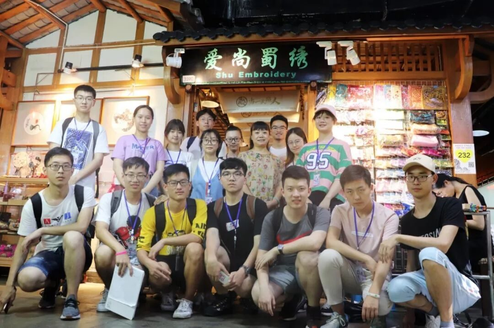
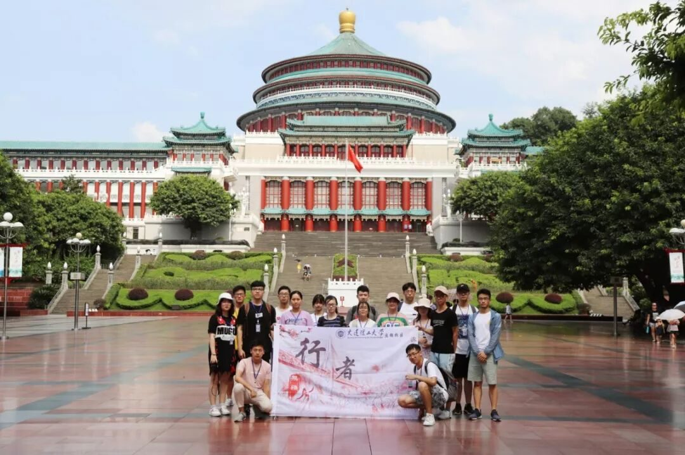
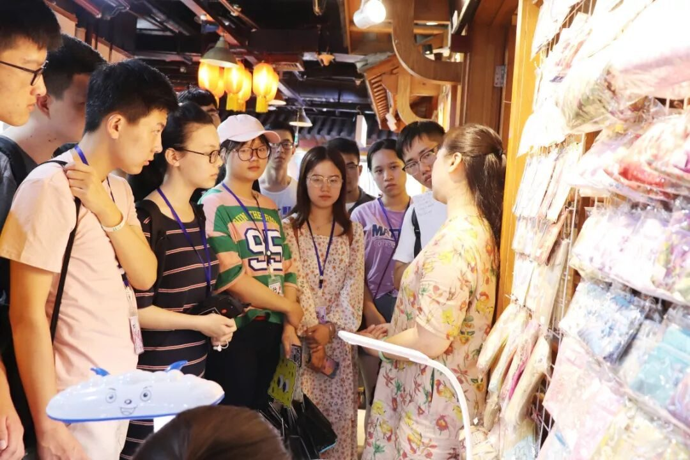

【行者无疆 源洄渝州】礼堂巍巍蜀绣悬


正是历代先贤们的悲欢和功过，蜀道厚重的文化外层得以积累，在时间的滔滔江水涤荡中，先民的点滴汗水挥洒下，一点一滴蕴积有情。


峨眉山月半轮秋，影入平羌江水流。
夜发清溪向三峡，思君不见下渝州。
廪君登钟离率五姓，奉姬发而远征；是巴蔓子借兵平内乱，自刎而允诺。“汉家城阙疑天上，秦地山川似镜”，这是沉佺期遥望山峦，用《兴庆池侍宴应制》嗟乎叹服；“蜀道真如天，江行万山间”，这是陈毅在《咏三峡》中的深沉感喟。
耿直、热情、包容、开放，发端于200万年前旧石器早期的巫山人历经先秦巴国、秦时巴郡、汉之江州、隋唐渝州，城市性格已悄然在每一个重庆人的心间生根发芽、传播拓展。巴蔓子战旗漫卷一马当先，用忠贞护一国人民安康；南宋游僧赵智凤隐姓埋名，历经七十余年凿大足石刻传工匠精神；邹容笑对死亡振臂呐喊，用革命军扫胡尘唤忠魂；卢作孚出身贫寒又不甘平凡，以一己之力开启一座城市的近代化道路而保抗战血脉，后人如何不感念其功。
“三千年江州府，八百年重庆城”，巴渝文化经周刘波周先生的严谨客观的研究考察、引人入胜的讲解而迷雾不再、峥嵘终显。
山字印—人民大礼堂

“这边可以这样设计…”“那边的装饰可以选择…”伫立于人民大礼堂之前，昔日建设者们为人民大礼堂建设的忙碌身影历历在目。建筑如山字巍巍矗立，浅黄色花岗岩在外包裹，琉璃瓦屋檐在上黄绿相间，与其他各地礼堂的相近而又不雷同；民族浩然正气氤氲其间，红岩精神似血液脉络在其中流淌，英雄文化与巴渝文化俨然根植重庆人民的心间，化为重庆人民不朽的心性动力。

百尺雕堂悬蜀绣。珠帘外、玉阑琼甃。
调鼎名家，吹箫贤胄，新卜凤皇佳繇。
一份蜀绣，两处闲愁


一眼望去，是被针法交错如银花绽指尖摄了魂，还是绳线虚虚实实缠绕交错、阴阳远近表现无遗缠住了我们的目光？我们无从作答。蜀绣既长于刺绣花鸟虫鱼等细腻的工笔，又善于表现气势磅礴的山水图景，当逼真传神的人物形象绣在其中，绣者们手中翻飞的针线便是人间难得几回见的绝世图景。当丝线以“盘盘焉，囷囷焉”的气势蜿蜒于软缎之上，我们只能投以《雨巷》中“太息”一般的目光，静静地驻足观望。
“君可见刺绣每一针，有人为你疼。君可见牡丹开一生，有人为你等？”当流行文化甚至于网红文化将传统手工制作被社会广为认可并以多种形式予以发扬，又何尝不是文化最好的勋章。


当巴渝文化走过了三千年历史的古道，
海纳百川兼收并蓄，
悄然间已成多情与神奇交辉的大美上品，
化作了豪放与沉郁兼具的宏伟史诗。
旅程行将结束，探索永在路上。
来源丨行者无疆实践团
文字丨王耿
排版丨陈嘉颖
审核丨邓子孚 段智然
行者无疆实践团
QQ：2758025831

随行者一起认识世界
长按二维码关注